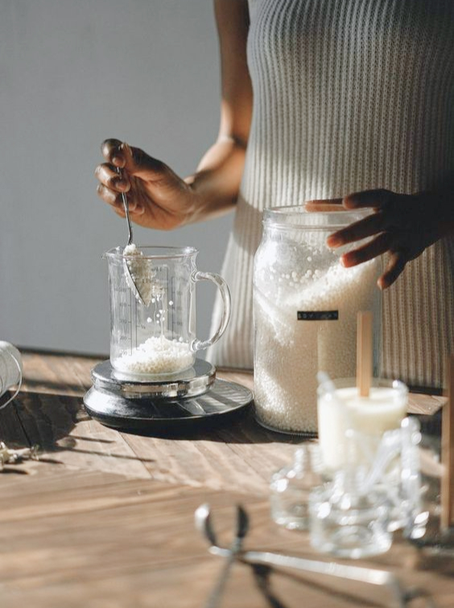

<section class="production-info">
    <div class="production-info__container">
        <h2 class="production-info__title">Production</h2>

        <p class="production-info__description">
            In our production, we prioritize quality.
            We produce eco-friendly candles and aromatic diffusers. What does this mean? We do not use paraffin like some brands in the mass market. Paraffin is not a natural material; candles made from it release byproducts of petroleum refining during the burning process. Moreover, paraffin burns 3-5 times shorter compared to natural wax.
            We use natural wax made from soy and coconut.
        </p>
    </div>

    
</section>
